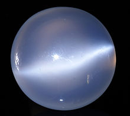

MOON STONE

ABOUT:
Etymology[edit]
Its name is derived from a visual effect, sheen or schiller (adularescence), caused by light diffraction within a micro-structure consisting of regular exsolution layers (lamellae) of different alkali feldspars (orthoclase and sodium-rich plagioclase).
History[edit]
Moonstone has been used in jewelry for millennia, including ancient civilizations. The Romans admired moonstone, as they believed it was derived from solidified rays of the Moon.[3] Both the Romans and Greeks associated moonstone with their lunar deities. In more recent history, moonstone became popular during the Art Nouveau period; French goldsmith René Lalique and many others created a large quantity of jewelry using this stone.[4]
Geology[edit]
The most common moonstone is of the orthoclase feldspar mineral adularia, named for an early mining site near Mt. Adular in Switzerland, now the town of St. Gotthard.[1] Solid solution of the plagioclase feldspar oligoclase +/- the potassium feldspar orthoclase also produces moonstone specimens.
Occurrence[edit]
Polished moonstone cabochon
Deposits of moonstone occur in Armenia (mainly from Lake Sevan), Australia, the Austrian Alps, Mexico, Madagascar, Myanmar, Norway, Poland, India, Sri Lanka[5] and the United States.[2]
In popular culture[edit]
The moonstone is the Florida State Gemstone; it was designated as such in 1970 to commemorate the Moon landings, which took off from Kennedy Space Center. Despite it being the Florida State Gemstone, it does not naturally occur in the state.[6]